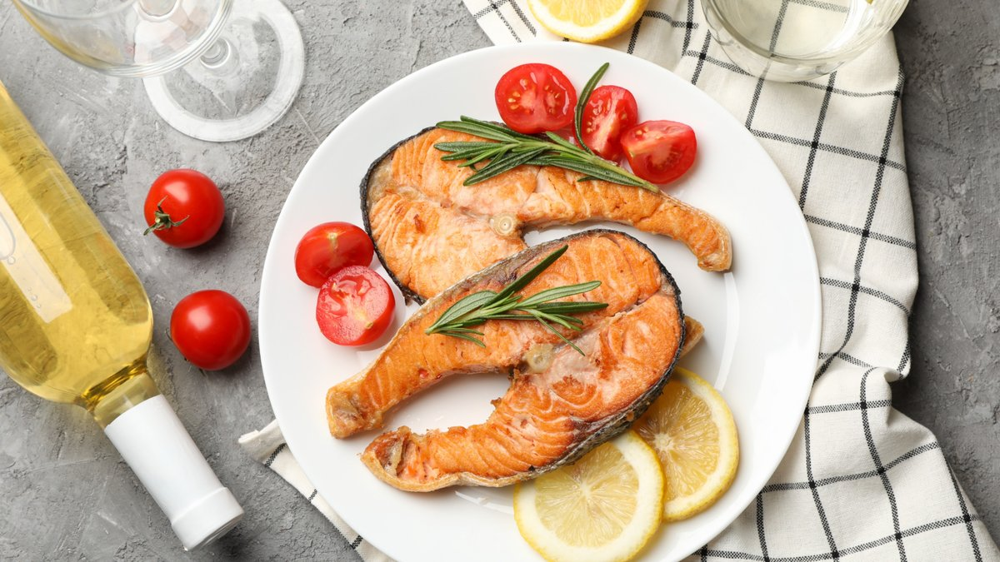
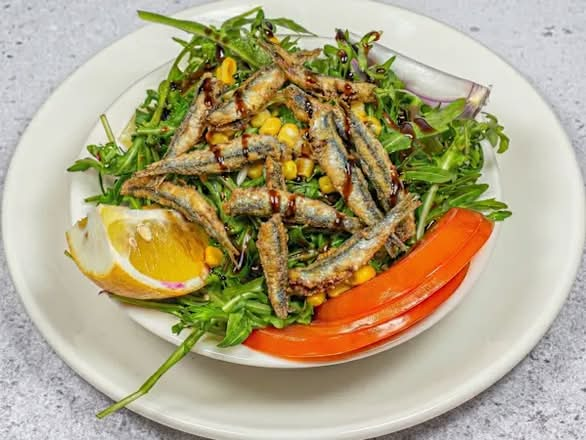
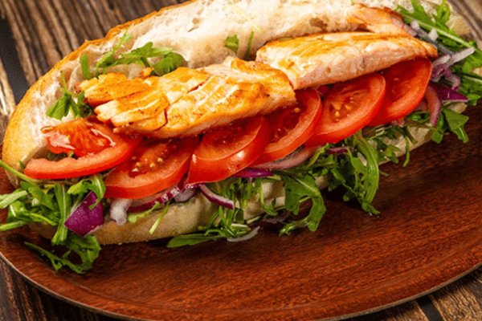
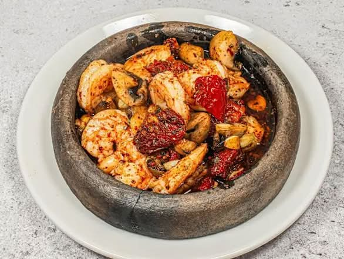

TAKA Fish House, adını Karadeniz'in hırçın sularında balıkçıların vazgeçilmezi olan "Taka"lardan alır. Geleneksel balıkçılık kültürünü, Berlin Kreuzberg'in modern ve dinamik yapısıyla harmanlıyoruz.
Amacımız sadece yemek sunmak değil; en taze deniz ürünlerini, sıfır katkı maddesi prensibiyle ve Türk misafirperverliği eşliğinde tabaklarınıza taşımak.
Karadeniz'in en taze mahsulleriyle, sıfır katkı maddesiyle hazırlanan özel tariflerimiz.

Şef SeçimiGünlük taze balıklardan hazırlanan seçkin ızgara tabağı.

En PopülerKaradeniz'in klasiği, taze hamsi ile hazırlanan özel salata.

YeniTaze somon, çıtır ekmek ve özel sos ile nefis bir sandviç.

SpesiyelTereyağında sote karides, TAKA'nın efsane baharatıyla.
Sizi şık, sıcak ve lezzet dolu bir atmosfere davet ediyoruz.
Bizi Instagram'da takip edin
Aynı taze balık, aynı sıfır katkı prensibi — kapınızda.
Doğrudan bizden sipariş için: +49 30 26349486
Deneyiminizi paylaşmanızı çok isteriz — Google üzerinden yorumlarımızı görebilir, dilerseniz kendi değerlendirmenizi bırakabilirsiniz.
Google'da Görüntüle & DeğerlendirKreuzberg'in en özel balık deneyimi için yerinizi ayırtın. Yoğun saatlerde beklememek için rezervasyon yapmanızı öneririz.
Lezzet dolu bir deneyim için Kreuzberg'deki restoranımıza bekliyoruz.
Kottbusser Damm 35, 10967 Berlin
Her Gün: 11:00 - 22:00